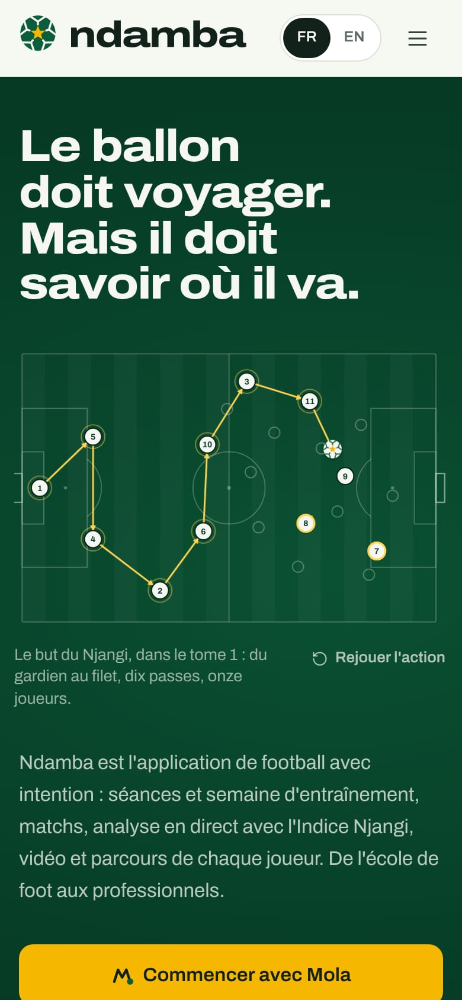
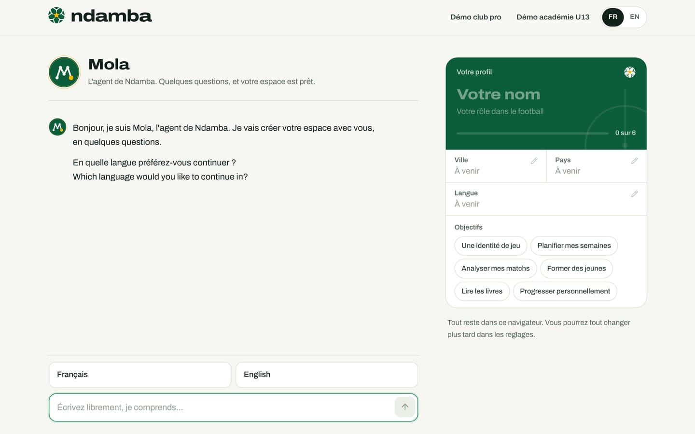
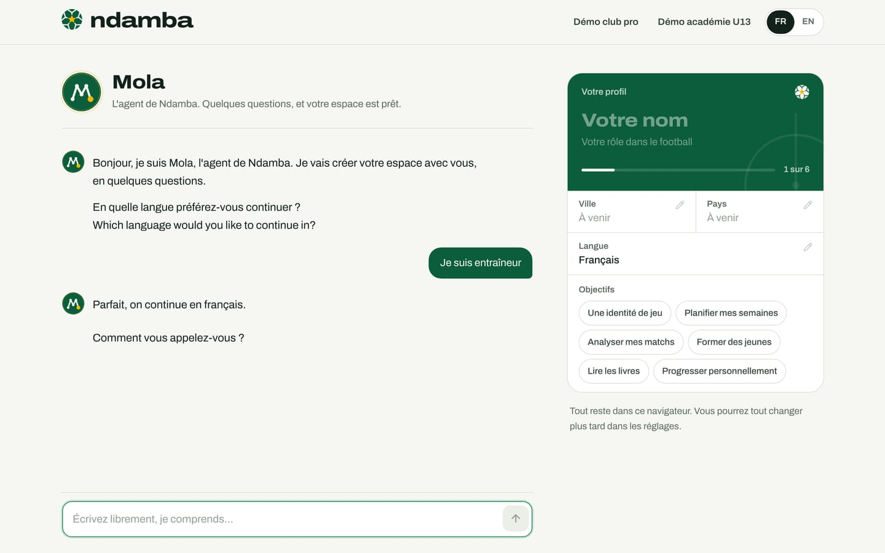

Créer son espace avec Mola
La première visite pas à pas, la conversation d’accueil avec Mola, la fiche profil qui se remplit pendant qu’on parle, les deux démos et ce qu’elles remplacent, revenir plus tard et recommencer.
9 min de lecture
Un formulaire d’inscription décourage vite un éducateur pressé. Écrire un message, en revanche, est un geste de tous les jours, en français, en anglais ou dans un mélange des deux. C’est pourquoi Ndamba ne commence pas par un formulaire, mais par une conversation. Mola, l’agent de Ndamba (« Mola », c’est « l’ami » en camfranglais), pose quelques questions, comprend les réponses écrites librement et remplit votre profil sous vos yeux. En quelques minutes, votre espace est prêt : pour un entraîneur, l’équipe est déjà créée, avec ses joueurs si vous avez collé leur liste. Aucun compte n’est demandé, aucune adresse e-mail, aucun mot de passe.
Ouvrir la conversation
La conversation se trouve à la page Bienvenue (/bienvenue). On y arrive de trois façons :
- avec le bouton doré Commencer avec Mola de l’accueil du site ;
- avec le bouton Commencer en haut à droite du site ;
- en ouvrant n’importe quelle page de l’application sans avoir de profil : Ndamba vous y conduit.


La page est volontairement dépouillée. En haut, le logo, les deux démos et le choix FR ou EN. Sur un ordinateur, la conversation occupe la gauche et votre fiche profil la droite. Sur un téléphone, la fiche est repliée en haut de l’écran, sous la forme d’une barre avec un petit anneau de progression ; touchez-la pour la déplier. Les deux démos s’y rangent dans un seul bouton Démo.


Mola se présente : « Bonjour, je suis Mola, l’agent de Ndamba. Je vais créer votre espace avec vous, en quelques questions. » Puis il pose sa première question en français et en anglais à la fois, puisqu’il ne sait pas encore quelle langue vous préférez.
La conversation, question par question
Sous la conversation, Mola propose à chaque étape des réponses toutes prêtes à toucher. Vous pouvez aussi écrire librement dans la zone « Écrivez librement, je comprends… » et envoyer avec la touche Entrée ou la flèche.
- La langue. Touchez Français ou English, ou écrivez-la. Mola confirme (« Parfait, on continue en français. ») et toute la page bascule dans cette langue. À cette étape, Mola ne retient que la langue : gardez le reste pour les questions suivantes.
- Votre nom. « Comment vous appelez-vous ? » Écrivez votre nom tel que vous voulez le voir dans l’application.
- Votre rôle. « Dans le football, vous êtes : » suivi de six choix : Entraîneur ou éducateur, Joueur ou joueuse, Analyste, Parent, Manager ou directeur technique, Fédération ou ligue.
- Les questions de votre rôle. Elles changent selon le rôle choisi (voir le tableau ci-dessous).
- Votre ville, puis votre pays. Mola propose Douala, Yaoundé, Garoua, Bafoussam, Abidjan et Dakar, ou Passer. Si la ville suffit à reconnaître le pays, il ne pose pas la question suivante et note simplement « Noté : Cameroun. ».
- Vos objectifs. « Dernière question : qu’attendez-vous de Ndamba ? » Touchez autant d’objectifs que vous voulez (par exemple Une identité de jeu, Planifier mes semaines, Analyser mes matchs, Former des jeunes, Lire les livres), puis Valider ce choix (ou Valider ces 3 choix s’il y en a trois), ou Plus tard.
- La relecture. « Merci Daniel. Voici votre profil. Touchez un champ pour le corriger, puis créez votre espace. » Le bouton doré Créer mon espace apparaît.


| Rôle choisi | Ce que Mola demande ensuite |
|---|---|
| Entraîneur ou éducateur | Le nom de l’équipe, sa catégorie (des U8 aux seniors pros), le format de jeu (5 contre 5 à 11 contre 11), puis la liste des joueurs |
| Joueur ou joueuse | La catégorie (l’âge suffit), le poste, le club (ou Pas de club) |
| Analyste | Le club ou l’équipe pour lesquels vous analysez |
| Parent | L’âge ou la catégorie de l’enfant |
| Manager ou directeur technique | Votre organisation |
| Fédération ou ligue | Votre organisation |
Deux détails rendent l’entraîneur plus rapide. Si vous choisissez Seniors pro, Mola ne demande pas le format : le football professionnel se joue à onze. Et la liste des joueurs se colle d’un seul coup, un joueur par ligne, avec le numéro si vous l’avez (« 9 Samuel Owona »). Dans cette zone, la touche Entrée passe à la ligne ; envoyez avec Ctrl + Entrée ou la flèche. Mola répond par exemple « J’ai bien lu 3 joueurs. ». Vous n’avez pas la liste sous la main ? Touchez Plus tard : vous ajouterez les joueurs dans l’effectif (chapitre 10).
Répondre en une phrase
Mola n’oblige pas à répondre question par question. Une seule phrase peut remplir plusieurs champs d’un coup. À la question du nom, écrivez par exemple : « Je suis Daniel Mbarga, entraîneur de l’Étoile de la Côte en Ligue 1 à Douala ». Mola répond « Noté : entraîneur, Seniors pro, 11 contre 11, Douala (Cameroun), Étoile de la Côte. » et saute directement à la liste des joueurs. Les questions dont il a déjà la réponse ne sont pas reposées. S’il ne comprend pas une réponse, il le dit (« Je n’ai pas bien compris. ») et repose la question.
La fiche profil qui se remplit
Pendant que vous parlez, la fiche Votre profil se remplit. Elle ressemble à une licence de club : un bandeau vert avec votre nom et votre rôle, une barre de progression et un compteur, comme « 1 sur 6 » au début ou « 10 sur 10 » pour un entraîneur qui a tout donné. Le nombre de champs dépend du rôle : un entraîneur a en plus l’équipe, la catégorie, le format et les joueurs.
Chaque champ affiche sa valeur, ou « À venir » s’il est encore vide. Un champ qui vient d’être rempli s’éclaire un instant, pour que vous voyiez ce que Mola a compris. Sous la fiche, une phrase rappelle l’essentiel : « Tout reste dans ce navigateur. Vous pourrez tout changer plus tard dans les réglages. »
Pour corriger, vous avez deux moyens :
- Toucher le champ sur la fiche (un petit crayon l’indique). Une zone de saisie ou une liste de choix s’ouvre ; validez avec la coche, annulez avec la croix. Les objectifs se cochent et se décochent directement sur la fiche.
- Le dire à Mola. À la relecture, la zone d’écriture devient « Une correction ? Dites-la simplement ». Écrivez par exemple « Je suis à Yaoundé » : Mola répond « Noté : Yaoundé. » et la fiche se met à jour.
Si votre correction répond à la question en cours, Mola passe à la suivante.
Créer l’espace
Quand la fiche vous convient, touchez Créer mon espace (« Vous pourrez tout modifier ensuite. »). Mola écrit « Je prépare votre espace. » et coche ses étapes une à une :
- Profil créé
- Équipe … créée, avec le nom de votre équipe (pour un entraîneur qui l’a donné)
- … joueurs ajoutés (si vous avez collé une liste)
- Mola est prêt à travailler
L’application s’ouvre ensuite sur votre accueil (chapitre 6). Votre profil démarre en formule Gratuit. Un message de bienvenue de Mola vous attend dans le bouton rond en bas à droite, signalé par un point vert ; pour un entraîneur, il propose de préparer la première semaine, d’organiser un match ou de choisir des exercices.
Seul le rôle d’entraîneur crée une équipe pendant la conversation. Un analyste, un directeur technique ou une fédération ajoute ses équipes ensuite, depuis l’accueil ou les Réglages.
Les deux démos
Vous voulez voir Ndamba rempli avant de créer votre propre espace ? Deux démos complètes s’ouvrent en un geste, depuis l’accueil du site ou depuis la barre de la page Bienvenue : Démo club pro et Démo académie U13. Elles mettent en scène des clubs et des personnes inventés.
| Démo club pro | Démo académie U13 | |
|---|---|---|
| L’équipe | L’Étoile de la Côte, seniors de Ligue 1 à Douala | Les Lionceaux de Bonamoussadi U13, l’équipe de Kaydoudou et BriBri |
| Vous êtes | Daniel Mbarga, entraîneur | Tonton Fokou, éducateur |
| L’effectif | 22 joueurs, en 4‑3-3 | 15 joueurs, en 4‑3-3 |
| La semaine | Récupération après le match, puis MD-4 à MD-1 | MD-4 à MD-1 |
| Le passé | Trois matchs de championnat joués, dont le dernier analysé en direct (2‑1 contre le Météore de Bafoussam) | Quatre matchs joués et codés, le dernier gagné 2‑1 contre les Requins de Bépanda |
| L’avenir | Le déplacement chez les Rapides de Kribi samedi, puis une coupe et un match de championnat | Le match chez les Panthères de Deïdo samedi |
| La formule | Coach Pro, activée en démo | Coach Pro, activée en démo |

Les dates de la démo suivent le calendrier réel : le prochain match tombe toujours le samedi de la semaine en cours, et les séances de la semaine l’entourent. Les textes de la démo sont écrits dans la langue active au moment où vous la lancez. Quand la démo s’ouvre depuis la page Bienvenue, Mola y laisse un message : « Bienvenue dans la démo, Daniel. Vous entraînez Étoile de la Côte : 22 joueurs, une semaine de séances, un match déjà analysé et un match à venir samedi. Demandez-moi ce que vous voulez, par exemple d’analyser le dernier match ou de rédiger la convocation. » Pour l’académie, le message annonce 15 joueurs et « 4 matchs déjà analysés ».
Ce qu’une démo remplace
Une démo ne s’ajoute pas à vos données : elle remplace ce que ce navigateur contient pour Ndamba. Profil, équipes, joueurs, séances, matchs, actions codées, conversation et tâches de Mola, carnet, défis, vidéos, évaluations, observations, présences, objectifs, grands moments et suivi de forme : tout est effacé, puis rempli avec la démo. Les leçons marquées « J’ai compris » et « Mon regard » de l’espace joueur sont effacées aussi. Seule reste la langue choisie. Passer d’une démo à l’autre remplace aussi la première.
Ndamba vous protège : si ce navigateur contient votre propre espace, une fenêtre « Lancer la démo ? » vous prévient et vous invite à exporter d’abord une sauvegarde ; il faut toucher Lancer la démo pour continuer, ou Annuler. La fenêtre s’ouvre depuis l’accueil du site comme depuis la barre de la page Bienvenue (son menu Démo sur téléphone).
Revenir plus tard
Une conversation interrompue n’est pas perdue tant que l’onglet reste ouvert : si vous rechargez la page, vous reprenez là où vous en étiez. Si vous fermez l’onglet avant Créer mon espace, la conversation repart du début.
Une fois l’espace créé, tout est enregistré dans ce navigateur. Revenez quand vous voulez : le bouton du site affiche maintenant Ouvrir l’app, et l’application s’ouvre directement sur votre accueil. Si vous retournez à la page Bienvenue, Mola vous reconnaît : « Bon retour, Daniel. Votre espace Ndamba est prêt dans ce navigateur. » Deux boutons vous attendent : Ouvrir l’application et Recommencer avec un nouveau profil.
Sur un autre appareil ou un autre navigateur, votre espace n’existe pas encore : il faut y restaurer une sauvegarde exportée (chapitre 6).
Recommencer
Il existe trois façons de repartir, de la plus douce à la plus radicale.
| Ce que vous faites | Ce qui change | Ce qui reste |
|---|---|---|
| Recommencer avec un nouveau profil (page Bienvenue) | Une nouvelle conversation ; à la fin, le nouveau profil remplace l’ancien et repart en formule Gratuit | Vos équipes, séances et matchs |
| Lancer une démo | Tout est remplacé par la démo | Rien |
| Tout effacer (Réglages, panneau Vos données) | Tout est supprimé, vous revenez à l’accueil du site | Rien |
La première option est faite pour changer de rôle ou de nom sans perdre son travail, comme l’écrit Mola : « Recommencer remplace votre profil à la fin de la conversation. Vos séances et vos matchs restent. » Pour un simple changement de nom, de rôle ou de langue, les Réglages suffisent, sans rien recommencer.